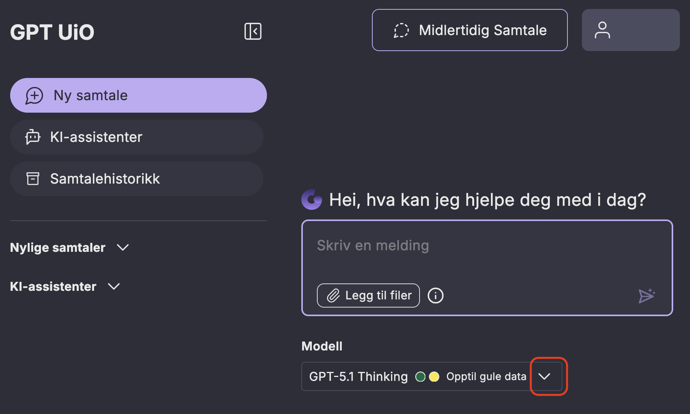
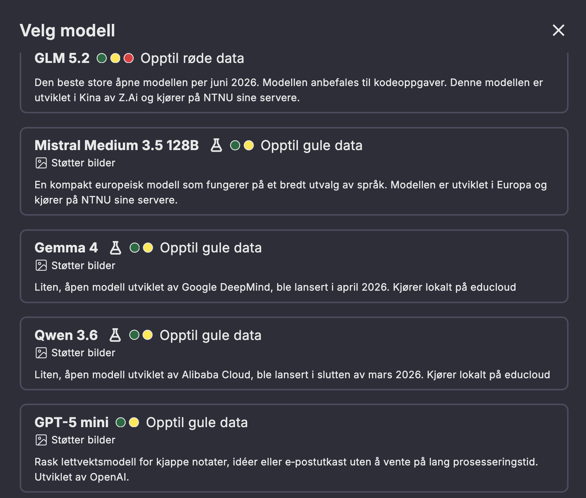

GPT UiO: hvilken modell skal du velge?
I GPT UiO kan du velge mellom flere ulike språkmodeller - altså hvilken “hjerne” tjenesten bruker. Modellene har forskjellig størrelse, funksjoner og bruksområder.
En spesielt viktig forskjell mellom modellene er om de kjører i skyen (OpenAI sine GPT-modeller i Microsoft Azure skyen) eller lokalt. Med lokalt mener vi på servere som eies og driftes av UiO eller vår samarbeidspartner NTNU.
De lokale språkmodellen er gode, men de er mindre enn de som kjører i skyen. Det betyr at dersom oppgaven du skal løse er veldig kompleks, så kan en sky-modell muligens gi deg et resultat av bedre kvalitet.
Kontrollspørsmål for å velge modell
- Er svaret godt nok med en mindre modell? Bra, gå for den mindre modellen og spar ressurser!
- Ikke god nok kvalitet på svaret? Bytt fra en mindre lokal modell til en større skymodell.
- Trenger du ekstra beskyttelse på dataene dine? Velg en lokal modell som støtter opptil røde data.
- Skal du behandle bilder i tillegg til tekst? Velg en modell som støtter bilder.
I GPT UiO sin modellvelger kan du lese litt om de forskjellige modellene, og se hvilken dataklassifisering hver enkelt er godkjent for.
Bonusinnhold
GPT UiO sin modellvelger
{kind=link}

Klikk på nedover-pilen (markert i rødt) for å se hvilke språkmodeller du kan velge mellom.
Eksempel på språkmodeller i modellvelgeren
{kind=link}

Når du klikker på modellvelgeren ser du en liste over de språkmodellene GPT UiO tilbyr. Listen oppdateres når nye modeller eller versjoner blir tilgjengelig.
For hver modell er det indikert hvilken data-kategori den støtter, om den er en eksperimentell modell for testing (kolbe), i tillegg til om modellen støtter bilder.
Det står også en liten beskrivelse på hva modellen egner seg til.
Og sist men ikke minst, om modellen er lokal (kjører hos UiO i Educloud eller hos NTNU), er den ikke det så kjører den i skyen.